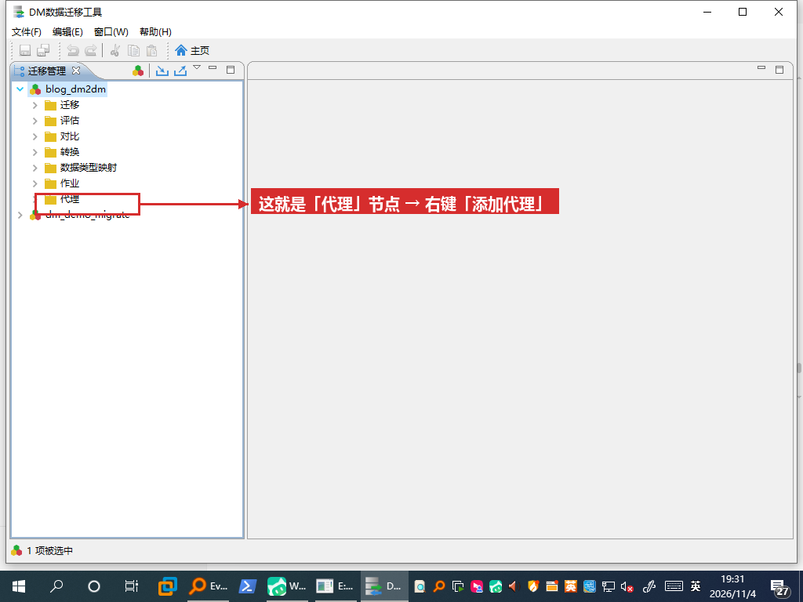
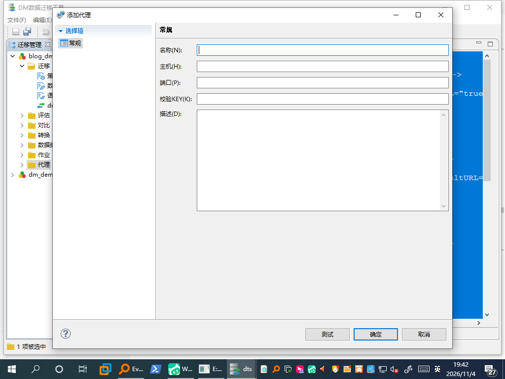
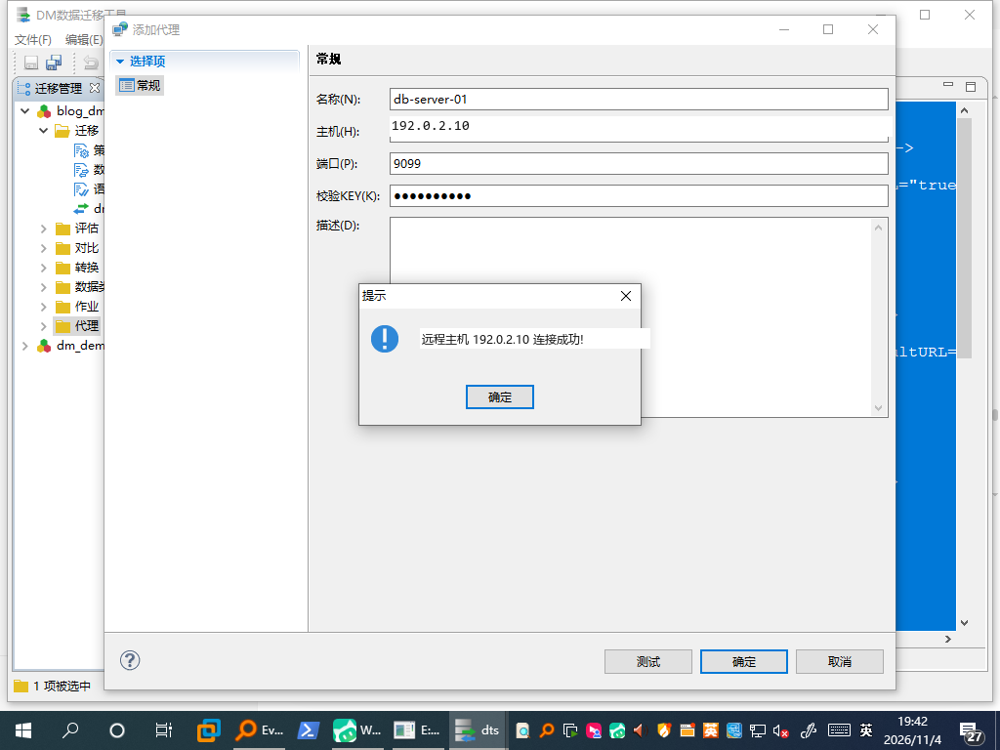
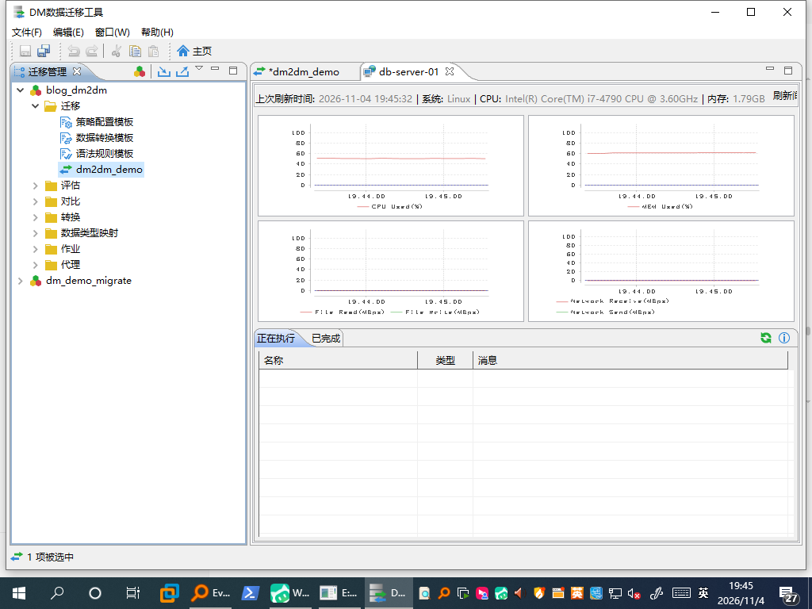

配一次，把 XML 丢给服务器跑，配完就能关机。
- 割接前搬历史数据、给测试库拉快照
- 事后要交日志和报告
- 以后还想照这份配置再跑一次
界面照旧点点点，活儿在服务器干，数据不经过你的电脑。
- 不想碰命令行，会点鼠标就行
- 想看着进度跑，随时能停能调
- 第一次搬不熟的库，怕出错
为什么需要"代理"
默认用 DTS 图形工具迁移时，你的电脑是数据中转站：从源库读出来，经过网络送到本机内存，再写进目标库。隔着 VPN 就等于让所有数据绕一大圈。
代理模式把它改成这样：客户端只发"开始迁移"这类指令和接收进度，数据搬运全在服务器侧完成。
顺带解决另一个老问题：数据库服务器是纯命令行 Linux，装不了图形界面。代理服务是命令行起的，不需要桌面。
服务端：两条命令
用 dmdba 用户登录数据库服务器，进入达梦安装目录的 tool/。这两个子命令藏得比较深，help 里能看到但官方文档很少提：
cd /home/dmdba/dmdbms/tool
# ① 设置代理校验码（自定义，客户端要填一样的）
./dts_cmd_run.sh install_service_key '<你的KEY>'
# ② 启动代理监听，端口自定义，例如 9099
nohup ./dts_cmd_run.sh agent 9099 > agent.log 2>&1 &端口不用非得是 9099。它是自定义的，挑服务器上没人占用的一个就行。很多机房早就按段放行过端口（比如 5200-5299），直接挑段里空着的一个，就不用再找人改防火墙策略——下面示例统一写 9099，只是方便对照。
本轮真机输出（可直接对照）：
Key file: ".../tool/workspace/temp_data/temp/project/service.key" generated.
Total time: 1.010 seconds
$ tail -1 agent.log
DtsAgent Start!
$ ss -ltnp | grep 9099
LISTEN 0 50 *:9099 *:* users:(("java",pid=22688,fd=253))firewall-cmd --add-port=9099/tcp（换成你的端口）；已经开过端口段的，直接用段内端口，别再单独开洞。生产上只对客户端 IP 开放。客户端：三下点击

找不到就往树的最下面看：代理和"迁移""作业"是同级节点

KEY 就是上一步 install_service_key 设的那个

示例地址已脱敏；KEY 在界面上以圆点显示

保存的代理会写进 DTS 工作区的 dts.xml（<agents><agent host=... port="9099" .../>），下次打开工具还在，不用重配。
执行任务时怎么用它
照常新建迁移任务，走到最后执行那一步时，在执行方式里选刚添加的代理，再点开始。之后界面照常显示进度，但数据流走的是服务器本地，不再经过你的电脑。
没有截图也能确认它真的生效，看三件事就够：
| 看哪里 | 应该看到 |
|---|---|
| 你的电脑 · 任务管理器 → 网络 | 迁移期间只有很小的指令流量（几十 KB/s 级），不是几十上百 MB/s 的数据流——这是"数据不绕 VPN"最直接的证据 |
服务器 · ss -ltnp | grep 9099 | 除了 LISTEN，还能看到客户端 IP 的 ESTABLISHED 连接，说明是客户端在指挥它 |
| 客户端 · 代理监控页 | 迁移一开始，CPU / 磁盘 / 网络曲线明显抬起来，说明活儿在服务器上干 |
端口与网络：一张表对齐
| 谁 → 谁 | 端口 | 说明 |
|---|---|---|
| 代理服务器 → 源库 / 目标库 | 数据库端口（如 5236） | 代理必须能直连两端数据库。这是"数据不出内网"的前提 |
| Windows 客户端 → 代理服务器 | 代理端口 （示例 9099，可自定义） | 只传指令、配置和进度，数据量很小。换端口时，客户端「添加代理」里的端口要填同一个 |
| Windows 客户端 → 数据库 | 5236 | 配置向导阶段要连库读元数据；配完可以不再需要 |
几条容易忽略的安全事项
| 事项 | 建议 |
|---|---|
| 校验 KEY | 别用 666666 这类示例值；用完换掉。它是明文写在 service.key 里的，顺手检查文件权限 |
| 代理端口（示例 9099） | 只对运维客户端 IP 开放；代理不是加密通道，别直接暴露到公网。已经开过端口段的，复用段内端口 |
| 用完即停 | 代理是常驻 Java 进程，占约 1 GB 堆。迁完 kill <pid> 并撤掉防火墙放行规则 |
| 内存 | 代理跑在数据库服务器上，会跟数据库抢内存。小内存机器上别同时开多个迁移任务（DTS 默认并发数 2） |
两种方式怎么选：优劣势、场景与决策
两种办法都不绕 VPN、都不需要服务器图形界面，共同点先摆这儿。真正的分野只有两句：谁发起执行、你的电脑要不要一直在线。
sync_job.xml 交给服务器，配完就能关机。换来的是可复跑、可留痕，代价是看不到实时进度、改配置要回 GUI。② 代理：GUI 只当遥控器，活儿在服务器干，但客户端得全程连着收进度。换来的是看得见、调得动，代价是多一个常驻进程、一个端口、一次值守。
翻译成一句人话：代理 ≈ 你原来的用法，只是数据不再经过你的电脑；命令行则是把整个动作"脚本化"，换来可复跑、可审计。
两种方式都是一次性同步，不是常驻定时任务
硬指标对比
| 维度 | ① GUI 配 XML + 服务器命令行 （上篇） | ② 代理模式（本篇） |
|---|---|---|
| 谁发起执行 | 服务器上的 dts_cmd_run.sh；客户端已下线 | 服务器上的 agent，但由 GUI 点「开始」触发 |
| 客户端全程在线 | 不用，配完可关机 | 要，执行期间断不得（只收进度也得连着） |
| 数据绕 VPN / 服务器图形界面 | 不绕 / 不要 | 不绕 / 不要 |
| 实时进度 | 弱：每 10 秒两行文本，粒度是「任务数」不是行数；大表阶段 Total 恒 0，看着像卡死 | 强：界面进度 + 代理监控页 CPU / 内存 / 磁盘 / 网络曲线 |
| 中途调整 | 不能，改表或改策略要回 GUI 重导 XML、重跑 | 能，边看边调，适合第一次搬心里没底 |
| 留痕 / 交接 | 强：XML + 日志 + 报告 xlsx + 三条判据 | 弱：靠界面看结果，得自己截图导报告 |
| 失败诊断 | 退出码不可信；OOM 或配置错误可能挂死不退，要靠日志判据 + timeout | 界面直接报错，但客户端一断现场就难复现 |
| 重跑 | 默认追加写入，重跑前要清目标表 | 同样有重复写入风险，界面里能改表策略 |
| 服务器额外负担 | 无 | agent 常驻 Java，约 1 GB 堆；用完要 kill |
| 安全面 | XML 内是加密口令串，别外发；目录权限给 dmdba | 代理端口要开防火墙，不是加密通道；service.key 明文存 KEY |
| 本轮实测覆盖 | 端到端跑通：1000 行、completed:5 error:0、报告生成 | 只到连接 + 监控页，勾代理后真跑一次迁移未实跑 |
优势与短板，摊开说
① 命令行 · 优势
- 无人值守，配完就能关机
- 配置即文档：XML + 日志 + 报告 + 三条判据，可交付可审计
- 服务器零额外进程，交接给运维只要一个 XML + 一条命令
② 代理 · 优势
- 跟以前用法几乎一样：还是界面点点点，不用学命令行、不用配 XML，对不熟悉命令行的人最友好
- 结果直观：迁了多少、哪张表失败，界面上直接看，不用去日志里找判据
- 报错不用看命令行：错误直接弹在界面上，少一层"看不懂的日志"
- 还能看服务器 CPU / 内存 / 磁盘 / 网络曲线，边跑边调
① 命令行 · 短板 / 别用它
- 进度只有任务级文本，没有行数百分比
- 改一次配置要回 GUI 重导；口令是加密串，不能手改
- 失败会假死不退，必须外面包
timeout+flock；重跑会重复写 - 要会看日志判据、会写
timeout+flock那层壳，对不熟悉命令行的人门槛偏高 - 别用它的场合：表还没挑定、想看实时进度、第一次搬不熟悉的库
② 代理 · 短板 / 别用它
- 客户端必须全程在线；多一个约 1 GB 堆的常驻进程和一个 9099 端口
- 跑完容易忘了
kill和撤防火墙；留痕靠人 - 本轮未做端到端实跑（见下方证据说明）
- 别用它的场合：割接窗口无人值守、客户要留可复跑证据、VPN 不稳、服务器内存紧张、没人愿意盯几小时
场景对号入座
| 你手上的情况 | 选 | 为什么 |
|---|---|---|
| 割接在凌晨，没人盯 | ① | 配完就能关机，服务器自己跑完 |
| 要交日志 / 报告，或以后同一规则再跑一次 | ① | XML + 报告可复跑、可审计 |
| Windows 电脑要合盖、VPN 会断 | ① | 执行不依赖客户端在线 |
| 第一次搬陌生库，表要临时挑 | ② | 界面里勾、边跑边改 |
| 想看进度和资源占用，随时调并发 | ② | 监控页曲线是现成的 |
| 卡在某张表，要现场排错 | ② | 界面直接告诉你哪一步出错 |
| 临时搬一次，有人值守，不需要留档 | ② | 省掉配 XML 那几步 |
| 不熟悉命令行，只想点几下 | ② | 用法跟以前一样，报错也在界面上 |
三个问题定下来
还有一条不算"技术"的判据：谁去操作。自己人点几下就能跑 → ②；要交给运维按手册执行、事后还要查 → ①。
completed:5 error:0、报告 xlsx）；② 只验证到「服务端起 agent + 客户端测试连接成功 + 监控页曲线」，"勾选代理后实际执行一次迁移"本轮没实跑。所以上表里 ② 的优劣判断来自界面能力与服务端行为，不是压测结论；上生产前请先用一张小表走完整链路。还没看另一种做法？《没有图形界面的服务器，怎么把达梦的数据搬过去？》 —— 配一次 XML，服务器跑一次，留日志和报告。